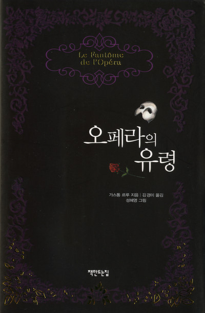

"오페라의 유령"
1910년 프랑스의 작가 가스통 르루(Gaston Leroux)가 집필한 소설. 
정체를 알 수 없는 존재 '유령'에 의해 파리 오페라의 극장은 공포로 휩싸인다.
한편, 새롭게 프리마돈나로 거듭난 코러스 단원 '크리스틴 다에'는
죽은 아버지가 보내준 '음악의 천사'에 의해
자신이 이토록 성장할 수 있다는
사실에 감격하면서도 유령의 가면 아래 얼굴을 궁금해 한다.
공연장에서 크리스틴이 아름답게 활약하는 모습에 반해버린 크리스틴의 소꿉친구 '라울'은
그녀에게 다가가려 하지만 이상하게 겁에 질려있는 그녀의 모습을 보고 의아해 한다
크리스틴을 도와주던 '음악의 천사'는 천사가 아닌 유령이었고,
유령의 정체는 아름다운 목소리를 가졌으나 일그러진 얼굴을 갖고 태어나
부모에게 버림받은 남자 '에릭'이었다.
에릭은 크리스틴을 사랑해 그녀에게 청혼을 한다.